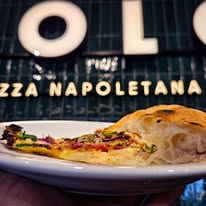
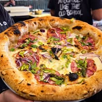
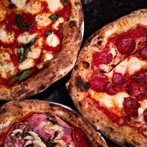
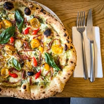

Pasja, oryginalne włoskie składniki i tradycyjny wypiek. Poczuj smak Neapolu w każdym kawałku.
Zobacz Menumozzarella di bufala campana d.o.p. | gniecione pomidory san marzano d.o.p. | świeża bazylia | oliwa ex. vergine | grana padano d.o.p.
salame napoli | grana padano d.o.p. | mozzarella di bufala campana d.o.p. | gniecione pomidory san marzano d.o.p. | świeża bazylia | oliwa ex. vergine
salame spianata piccante | pecorino romano d.o.p. | mozzarella di bufala campana d.o.p. | gniecione pomidory san marzano d.o.p. | świeża bazylia | oliwa ex. vergine
mozzarella fior di latte | sos pomidorowy rosso gargano | świeża bazylia | oliwa ex. vergine
/możemy zrobić z wegańską mozzarellą +4zł/
szynka cotto | świeże pieczarki | mozzarella fior di latte | sos pomidorowy rosso gargano | świeża bazylia | oliwa ex. vergine
salami pepperoni | do wyboru jedna z trzech papryczek: chili, jalapeno, piri-piri | sos pomidorowy rosso gargano | mozzarella fior di latte | oliwa ex. vergine
salamella calabrese | pancetta affumicata | salami pepperoni | papryczki piri-piri | sos pomidorowy rosso gargano | mozzarella fior di latte | oliwa ex. vergine
włoski tuńczyk marynowany w oliwie z lombardii | czerwona cebula | kukurydza | czarny pieprz | sos pomidorowy rosso gargano | mozzarella fior di latte | świeża bazylia | oliwa ex. vergine | limonkowy sos mayo
salame napoli | szynka cotto | pancetta affumicata | cebula biała | mozzarella fior di latte | sos pomidorowy rosso gargano | oliwa ex. vergine
fileciki anchois | kapary picolo | oliwki taggiasche | oliwki zielone | pomidorki cherry | czosnek | grana padano d.o.p. | natka pietruszki | sos pomidorowy rosso gargano | oliwa ex. vergine | sycylijskie oregano
gorgonzola d.o.p. | grana padano d.o.p. | pecorino romano d.o.p. | mozzarella fior di latte | sos pomidorowy rosso gargano | świeża bazylia | oliwa ex. vergine
/na życzenie salami pepperoni / spianata piccante +5zł/
salame napoli | czerwona cebula | świeże chilli | czosnek | grana padano d.o.p. | ser dobbiaco | sos pomidorowy rosso gargano | mozzarella fior di latte | oliwa ex. vergine | świeża bazylia po piecu
spianata piccante | kalabryjska kiełbasa nduja | świeże chilli | czerwona cebula | świeża bazylia | mozzarella fior di latte | sos pomidorowy rosso gargano | oliwa ex. vergine z peperoncino
stracciatella | pomidorki wolno pieczone w piecu z oliwą i oregano sycylijskim | konfitowany czosnek | peperoncino | sos pomidorowy rosso gargano | oliwa ex. vergine | świeża bazylia po piecu
salamella calabrese | stracciatella | grana padano d.o.p. | colo's hot honey | świeża bazylia | suszone peperoncino | mozzarella fior di latte | sos pomidorowy rosso gargano | oliwa ex. vergine
3 rodzaje włoskiego salami: napoli, ventricina, salamella calabrese | alpejski ser dobbiaco | świeża bazylia | sycylijskie oregano | mozzarella fior di latte | sos pomidorowy rosso gargano | oliwa ex. vergine
po piecu: prosciutto di san daniele | świeża rukola | grana padano d.o.p.
do pieca: mozzarella fior di latte | sos pomidorowy rosso gargano | oliwa ex. vergine
prosto z węgier: salami kaiser, kiełbasa tuzes kolbasz, ostre paprykowe chilli, sos mayo z pastą edes piros, grillowana w piecu papryka czerwona cebula
świeży szpinak | gorgonzola d.o.p. | czosnek | suszone pomidory | stracciatella | zielone pesto bazyliowo/czosnkowe | mozzarella fior di latte | oliwa ex. vergine
grillowany kurczak | cebula czerwona | kukurydza | sos bbq santamaria | mozzarella fior di latte | oliwa ex. vergine
salami ventricina | czosnek | natka pietruszki | suszone peperoncino | oliwa pietruszkowa | grana padano d.o.p. | mozzarella fior di latte | oliwa ex. vergine
grillowany kurczak | pancetta | sałata rzymska | pomidorki cherry | sos cezar | grana padano d.o.p. | mozzarella fior di latte | oliwa ex. vergine
leśne borowiki | sos śmietanowy z pastą truflową | czosnek | natka pietruszki | taleggio d.o.p. | grana padano d.o.p. | mozzarella fior di latte | oliwa ex. vergine
oliwki belle di cerignola | oliwki termite di bitetto | oliwki leccino | oliwki nocellara | oliwki peranzana | oliwa ex. vergine | oregano sycylijskie | skórka z cytryny
liście sałat | colo vinaigrette | pistacje | zasypane dużą ilością grana padano d.o.p.
pomidorki pieczone w niskiej temperaturze | burrata | domowe pesto bazyliowe | oliwa ex. vergine | sól maldon | 2 kawałki naszej focaccii
krem z gorgonzoli | 6 kawałków naszej focaccii
wędliny: prosciutto san daniele | salsiccia piccante fiorucci | salame napoli | mortadella di bologna | ser asiago | oliwki | kolorowe papryczki peperoncini dolci | 2 kawałki naszej focaccii
grillowany kurczak | sałaty mieszane | pomidory | ogórek | świeże listki | grana padano d.o.p. | limonkowy sos mayo
oryginalna grecka feta d.o.p. | pomidory | ogórek | czerwona cebula | papryka | oliwki zielone | oliwki taggiasche | sałaty mieszane | sos vinaigrette | sos tzatziki
grillowany kurczak | sałaty mieszane | pomidorki cherry | suszone pomidory | czerwona cebula | awokado | kaparki | oliwki zielone | grana padano | sos vinaigrette | sos tzatziki
grillowana pancetta | grillowany kurczak | sałata rzymska | sos cezar | grana padano d.o.p. | grzanki z focaccii
prosciutto san daniele | sałaty mieszane z rucolą | pomidorki cherry | ogórek zielony | grana padano d.o.p. | sos balsamiczny | oliwa ex. vergine
zapytaj obsługę jaki mamy dziś smak



